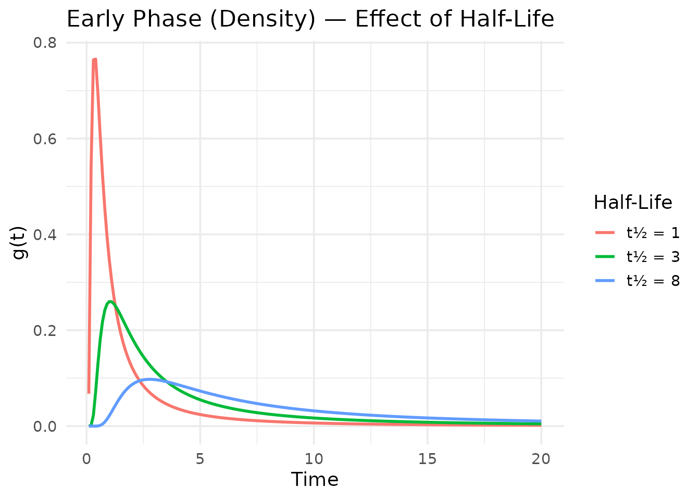
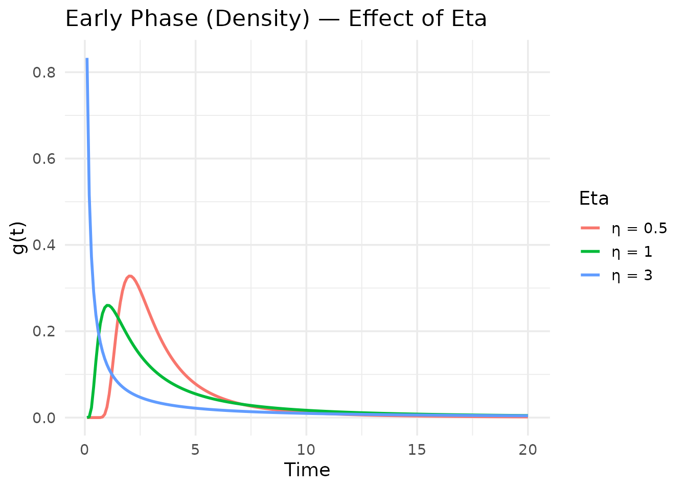
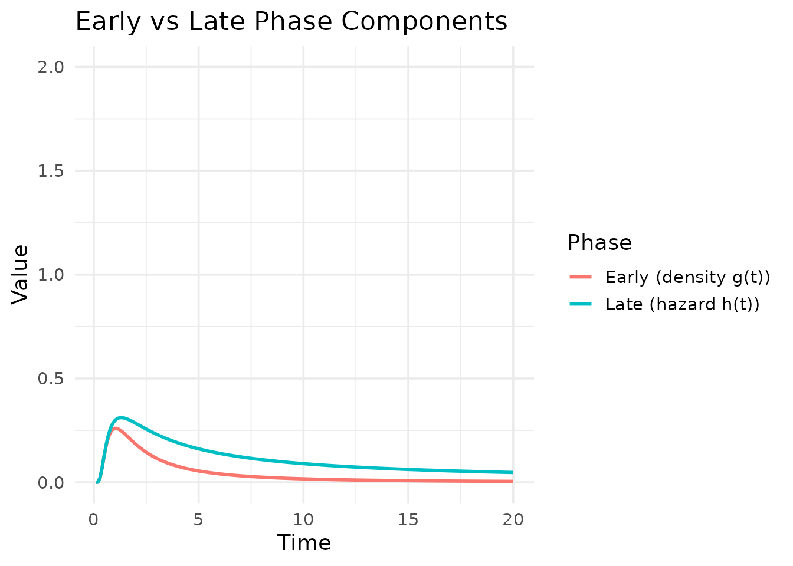

Understanding Temporal Decomposition
Source:vignettes/temporal-decomposition.Rmd
temporal-decomposition.RmdThe temporal decomposition framework
The multimix model decomposes the conditional odds of a
binary outcome into two temporal components:
where captures the early phase (density function ) and captures the late phase (hazard function ).
Both functions are derived from a generalized temporal decomposition parameterized by:
- Half-life (): controls the time scale
-
Eta
(,
called
nuinternally): exponent of time -
Gamma
(,
called
minternally): shape of the distribution
Exploring temporal basis functions
Let’s visualize how the early and late phase functions behave under different parameter settings.
Effect of half-life
times <- seq(0.1, 20, by = 0.1)
df_thalf <- data.frame(
Time = rep(times, 3),
Value = c(
get_early_phase(times, thalf = 1, eta = 1, gamma = 0),
get_early_phase(times, thalf = 3, eta = 1, gamma = 0),
get_early_phase(times, thalf = 8, eta = 1, gamma = 0)
),
HalfLife = rep(c("t½ = 1", "t½ = 3", "t½ = 8"), each = length(times))
)
ggplot(df_thalf, aes(x = Time, y = Value, color = HalfLife)) +
geom_line(linewidth = 1) +
labs(
title = "Early Phase (Density) — Effect of Half-Life",
x = "Time", y = "g(t)", color = "Half-Life"
) +
theme_minimal(base_size = 14)
The half-life parameter shifts the temporal scale: shorter half-lives produce faster-decaying early phases.
Effect of eta (time exponent)
df_eta <- data.frame(
Time = rep(times, 3),
Value = c(
get_early_phase(times, thalf = 3, eta = 0.5, gamma = 0),
get_early_phase(times, thalf = 3, eta = 1, gamma = 0),
get_early_phase(times, thalf = 3, eta = 3, gamma = 0)
),
Eta = rep(c("η = 0.5", "η = 1", "η = 3"), each = length(times))
)
ggplot(df_eta, aes(x = Time, y = Value, color = Eta)) +
geom_line(linewidth = 1) +
labs(
title = "Early Phase (Density) — Effect of Eta",
x = "Time", y = "g(t)", color = "Eta"
) +
theme_minimal(base_size = 14)
Higher eta values produce sharper, more peaked density curves.
Early vs late phase
df_phases <- data.frame(
Time = rep(times, 2),
Value = c(
get_early_phase(times, thalf = 3, eta = 1, gamma = 0),
get_late_phase(times, thalf = 3, eta = 1, gamma = 0)
),
Phase = rep(
c("Early (density g(t))", "Late (hazard h(t))"), each = length(times)
)
)
ggplot(df_phases, aes(x = Time, y = Value, color = Phase)) +
geom_line(linewidth = 1) +
labs(
title = "Early vs Late Phase Components",
x = "Time", y = "Value", color = "Phase"
) +
theme_minimal(base_size = 14) +
coord_cartesian(ylim = c(0, 2))
The early phase (density) peaks and declines, while the late phase (hazard) increases over time — reflecting the intuition that different mechanisms drive the outcome at different time scales.
Valid parameter combinations
The decompos() function handles six parameter sign
combinations:
| Case | (m) | (nu) | Behavior |
|---|---|---|---|
| 1 | > 0 | > 0 | Standard sigmoidal |
| 1L | = 0 | > 0 | Limiting exponential case |
| 2 | < 0 | > 0 | Heavy-tailed |
| 2L | < 0 | = 0 | Exponential decay |
| 3 | > 0 | < 0 | Bounded cumulative |
| 3L | = 0 | < 0 | Bounded exponential |
The case where both and is mathematically undefined and will produce an error.
Practical guidelines
- Start with
eta = 1, gamma = 0(exponential-like decay) for initial exploration - Use the default bounds as a starting point and narrow them based on domain knowledge
- The half-life parameter is the most interpretable: it controls when each phase peaks or transitions
- If the optimizer struggles to converge, try fixing gamma parameters
to 0 via
fixed_pars